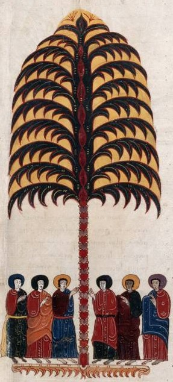
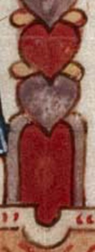

Neste comentário ao Apocalipse, feito em 1047, salta à vista uma árvore da vida, com o tronco todo feito de corações, alternadamente púrpura (a alma) e vermelhos (a matéria). Estes apresentam-se raiados por "gotas" mais claras (o coração e os quatro cravos - as 5 chagas). A árvore termina, ao cimo, numa flor de lis. Mas o pormenor mais delicioso acaba por ser a porta que se vê na base da representação, configurando a árvore da vida como caminho iniciático de ascensão espiritual.